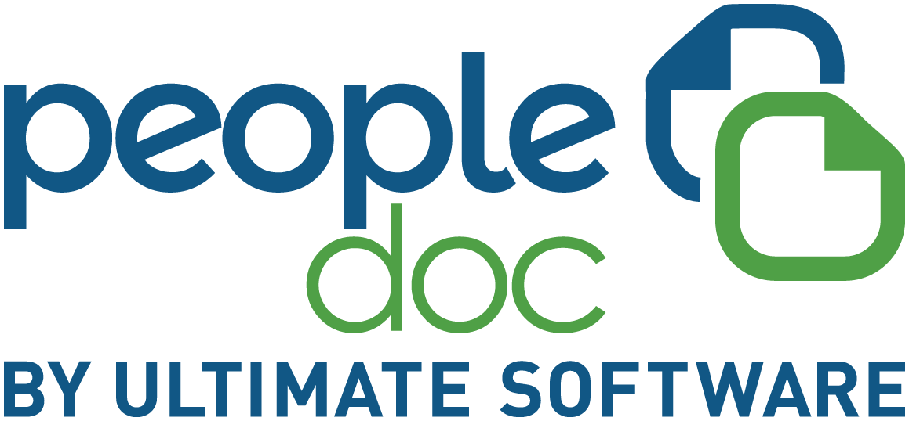
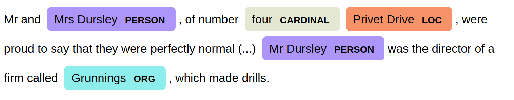
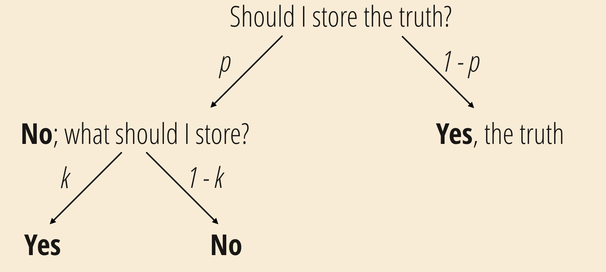
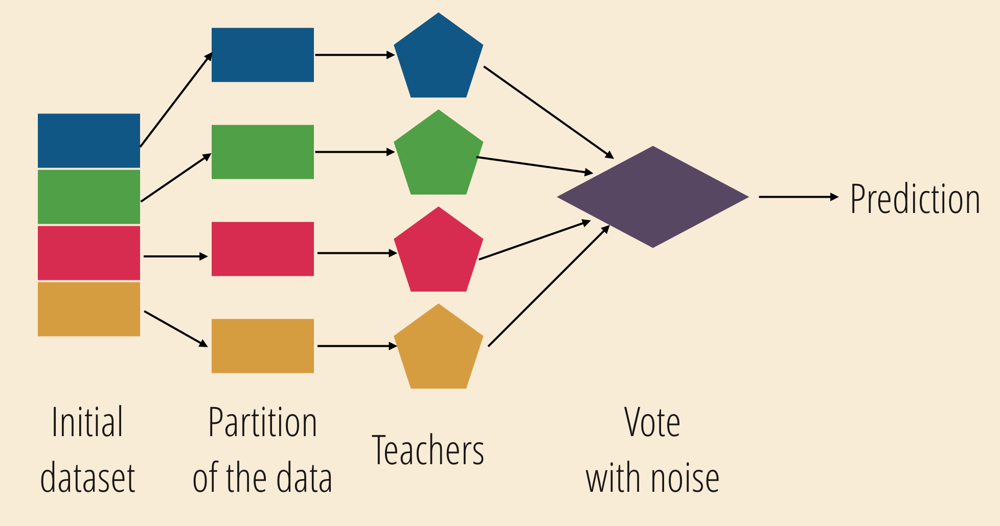
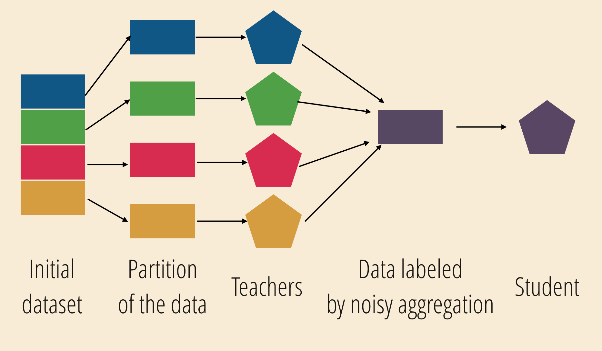
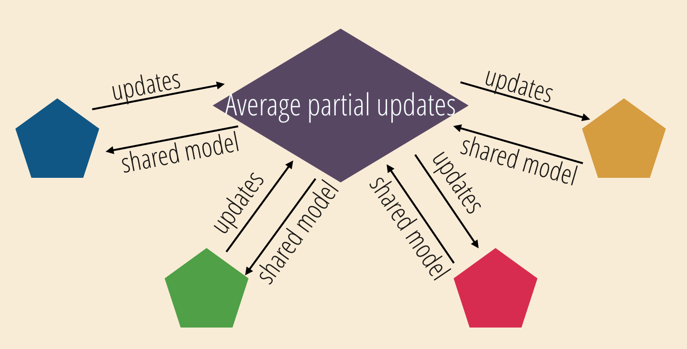
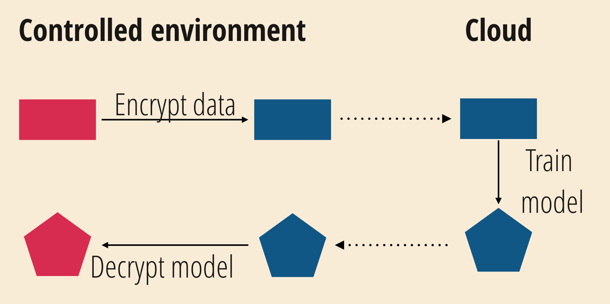

Privacy-preserving text analysis
Sarah Diot-Girard
About me
- Data scientist at 
- Interested in devops and ethics
Motivation
Distinguish between legitimate owls and
SPAM (Strigidae* Proliferating Adverse Messages)
while preserving privacy of owl communications
The problem is getting out of hand
You try a rule-based approach
You have to collect some private information
Best way of doing
privacy-preserving ML
Don't collect private information
Encryption
Dataset anonymisation
PII and sensitive attributes
- Personally Identifying Information: values that identify an individual
- Sensitive attributes: values linked to an individual that should remain private
PII removal in structured data
- Masking
- Hashing
- Faking
- Mapping
PII removal in text
Determine which tokens are sensitive
Dictionary-based PII removal
Remove all names of Hogwarts students and staff
Rule-based PII removal
Use the structure of the documents
Regular expressions
hermione.granger@aowl.co.uk
([a-z0-9\.\-\+])*@([a-z0-9])*(.([a-z])*)+Named Entity Recognition
Ad-hoc pseudonymisation algorithms
+ improved accuracy on your use-case
- requires manual annotation
An extract from Ms Pomfrey records
| ID | Age | Gender | House | Magical Disease |
|---|---|---|---|---|
| 1 | 15 | M | Slytherin | Dragon pox |
| 2 | 19 | M | Hufflepuff | Black cat flu |
| 3 | 12 | F | Gryffindor | Levitation sickness |
| 4 | 18 | F | Slytherin | Petrification |
| 5 | 14 | M | Gryffindor | Hippogriff bite |
| 6 | 14 | M | Gryffindor | Dragon pox |
| 7 | 19 | M | Ravenclaw | Black cat flu |
| 8 | 13 | F | Ravenclaw | Levitation sickness |
| 9 | 17 | F | Slytherin | Lycanthropy |
| 10 | 15 | M | Gryffindor | Hippogriff bite |
What can you tell me about Harry, a 15-year-old Gryffindor boy?
Anonymisation in structured data
Some combinations of pseudo-identifiers may be unique
k-anonymity
No combination of public attributes
singles out less than k rows in your dataset
k-anonymity
Use ranges or aggregates instead of exact values
Enforcing 2-anonymity
| ID | Age | Gender | House | Magical Disease |
|---|---|---|---|---|
| 1 | 15-20 | M | Slyth./Griff. | Dragon pox |
| 2 | 15-20 | M | Huff./Rav. | Black cat flu |
| 3 | 10-14 | F | Griff./Rav. | Levitation sickness |
| 4 | 15-20 | F | Slyth./Griff. | Petrification |
| 5 | 10-14 | M | Slyth./Griff. | Hippogriff bite |
| 6 | 10-14 | M | Slyth./Griff. | Dragon pox |
| 7 | 15-20 | M | Huff./Rav. | Black cat flu |
| 8 | 10-14 | F | Griff./Rav. | Levitation sickness |
| 9 | 15-20 | F | Slyth./Griff. | Lycanthropy |
| 10 | 15-20 | M | Slyth./Griff. | Hippogriff bite |
What can you tell me about Luna, a 13-year-old Ravenclaw girl?
l-diversity
Each k-anonymous group contains at least
l different values for a given sensitive attribute
Enforcing 2-diversity
| ID | Age | Gender | House | Magical Disease |
|---|---|---|---|---|
| 3 | 10-14 | F | \ | Levitation sickness |
| 5 | 10-14 | M | \ | Hippogriff bite |
| 6 | 10-14 | M | \ | Dragon pox |
| 8 | 10-14 | F | \ | Levitation sickness |
| 12 | 10-14 | M | \ | Common cold |
| 18 | 10-14 | F | \ | Levitation sickness |
| 21 | 10-14 | M | \ | Black cat flu |
| 25 | 10-14 | F | \ | Levitation sickness |
| 28 | 10-14 | F | \ | Dragon pox |
| 30 | 10-14 | M | \ | Hippogriff bite |
What can you tell me about Luna, a 13-year-old Ravenclaw girl?
t-closeness
l-diversity does not protect from statistical attacks
t-closeness
The distribution of the sensitive attribute in any group
is close to the overall distribution of the attribute
Anonymisation in structured data
Trade-off between dataset value and privacy
What about anonymisation in text?
Minerva McGonagall
head of the Gryffindor House
Anonymisation in text
Extract pseudo-identifiers
Mask or aggregate them
Is it enough?
Authorship attribution algorithms...
Privacy-preserving models
Differential privacy
Mathematical framework to quantify the privacy loss
Differential privacy
\[ \Pr[\mathscr{K}(D_1) \in S] ≤ \exp(\epsilon) × \Pr[\mathscr{K}(D_2) \in S]\]Differential privacy
Results should not depend "too much"
on the data of any one individual
A non-differential private algorithm
Maximum a posteriori
- n first samples are SPAM
- prediction function: SPAM with probability 1
- n +1-th sample: not SPAM
- updated prediction function: SPAM with probability \(\frac{n}{n+1}\),
not SPAM with probability \(\frac{1}{n+1}\)
Differential privacy
when collecting data
Did you cheat to your OWL test?
Differential privacy
when storing data
Apply a differential private procedure to anonymize a dataset
Differential private models
Stochastic gradient descent
- Gradient clipping on each sample
- Add random noise to the clipped gradients
Private aggregation of teacher ensembles (PATE)
Private aggregation of teacher ensembles (PATE)
Training a model outside of your environment
Federated learning
Learning without sharing data
Homomorphic encryption
Learning without exposing data
Homomorphic encryption limitations
- Managing noise levels
- Non-linear operations
- Performances
In a nutshell
- True anonymisation is hard
- Beware of edge cases
- Bugs can ruin all your efforts
- It's always a trade-off
Future perspectives
- How to evaluate the impact on your use-case?
- How to generate privacy-preserving synthetic data?
With which guarantees? - How to quantify privacy loss without accessing the values?
And this SPAM problem?
Well, maybe you do want to buy a Nimbus 2000 after all...
Questions?
Bibliography
k-anonymity: a model for protecting privacy, Latanya Sweeney (2002)
Mondrian Multidimensional k-Anonymity, Kristen LeFevre, David J. DeWitt and Raghu Ramakrishnan (2006)
t-Closeness: Privacy beyond k-anonymity and l-diversity, Ninghui Li, Tiancheng Li and Suresh Venkatasubramanian (2007)
The Algorithmic Foundations of Differential Privacy, Cynthia Dwork and Aaron Roth (2014)
Deep learning with differential privacy, Martin Abadi, Andy Chu, Ian Goodfellow, H. Brendan McMahan, Ilya Mironov, Kunal Talwar and Li Zhang (2016)
Semi-supervised knowledge transfer for deep learning from private training data, Nicolas Papernot, Martín Abadi, Ulfar Erlingsson, Ian Goodfellow and Kunal Talwar (2016)
Beyond Inferring Class Representatives: User-Level Privacy Leakage From Federated Learning, Zhibo Wang, Mengkai Song, Zhang Zhifei, Yang Song, Qian Wang and Hairong Qi (2019)
Practical secure aggregation for privacy-preserving machine learning, Keith Bonawitz, Vladimir Ivanov, Ben Kreuter, Antonio Marcedone, H. Brendan McMahan, Sarvar Patel, Daniel Ramage, Aaron Segal and Karn Seth (2017)